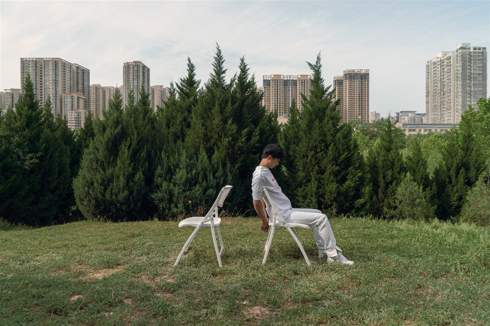
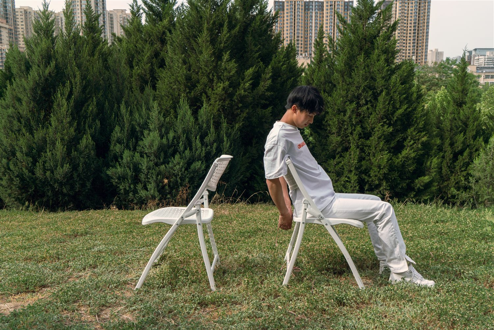
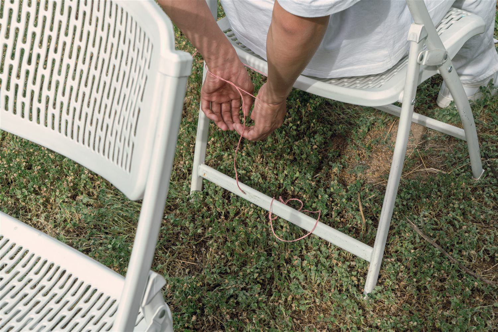
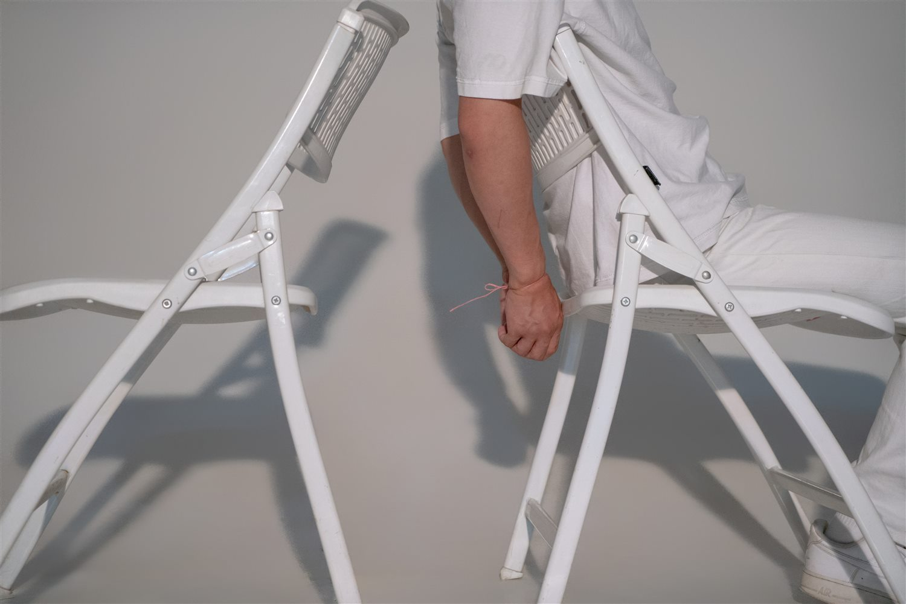
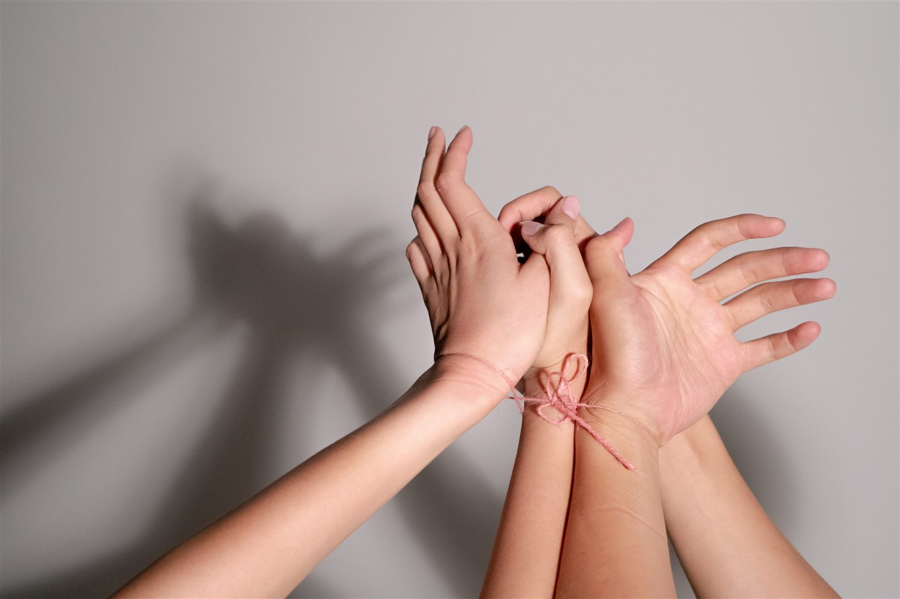

ACTION ARCHIVE / 03 / RELATION
《翻花绳》Thread Game
线既是规则，也是边界；一场游戏让身体与关系处于不断被改写的状态。
String is rule and boundary at once; a game keeps body and relation in a state of continual rewriting.
横向拖动、滚轮或方向键浏览；点击图片放大Scroll, use arrow keys, or click to enlarge





FRAME 0106 IMAGES
作品文字 / 展开阅读Work text / Read note
《翻花绳》以游戏式动作进入身体与关系的拉扯。线既是规则，也是边界；它在手与身体之间被不断改写，使行为成为一种可见的协商过程。
Thread Game enters bodily and relational tension through a game-like action. The string becomes rule and boundary at once, constantly rewritten between hands and bodies.